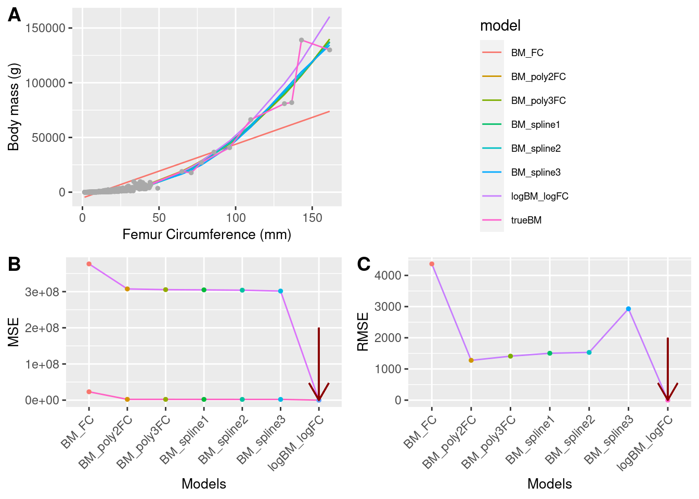
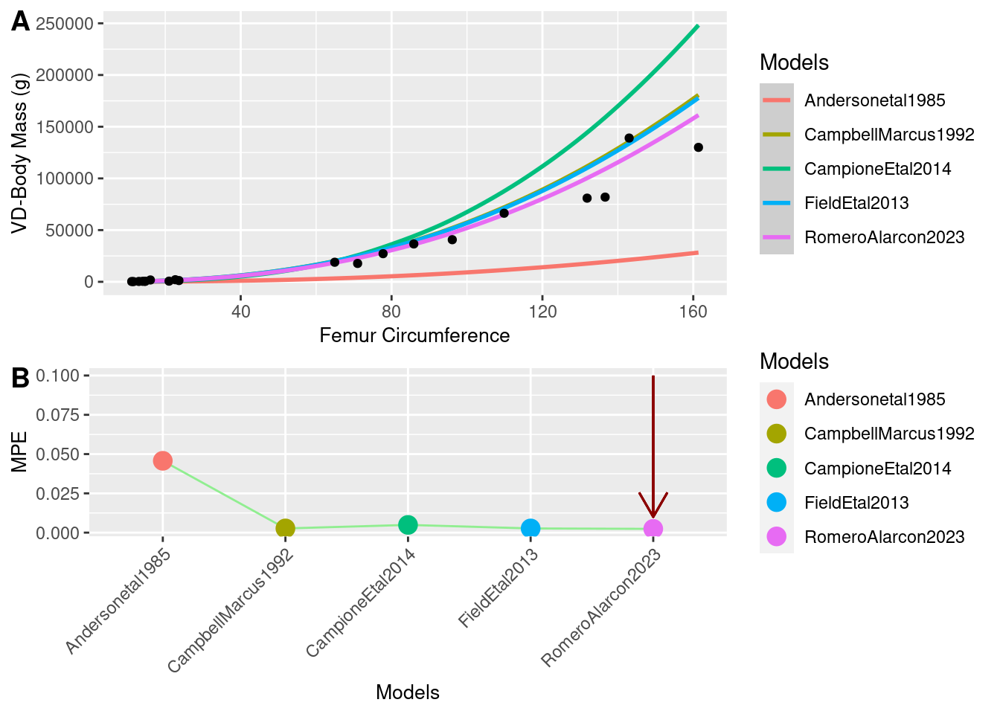

Predicting body mass in bipedal dinosaurs
Introduction
Body mass (BM) is one of the most significant variables in the biology of an organism. It could provide insights into their physiology, ecology, or behavior. Indeed, it could influence speciation and extinction rates; driving patterns such as gigantism in some vertebrates like dinosaurs, whales, and palaeognathaes [@ChristiansenFarina2004, @CampioneEvans2020]. However, while obtaining BM data from extant species is relatively straightforward, it becomes challenging when attempting to obtain this variable for extinct organisms. Therefore, prediction becomes the only viable method to obtain this feature[@CampionEvans2012].
Various methods exist to reconstruct body size, shape, and weight from preserved skeletons (Fossils). The most popular approaches are volumetric density (VD) and extant scaling (ES). Although VD was the initial proposal for calculating BM, ES is currently the most widely used tool. It is based on linear models, is easy to replicate and use, and is more cost-effective compared to the scans used by VD [@Andersonetal1985]. However, current models have faced criticism due to their potential to over- or under-estimate BM. Another challenge arises from the distinct distribution of mass in quadrupeds compared to bipeds, leading to more complexities in calculating the BM of bipeds as predictors need to be restricted only to forelimbs [@Campioneetal2014, @campioneEvans2020]. Furthermore, the wide range of BM distribution in modern birds, ranging from 50g to 130,000g, presents an additional challenge, especially when the presence of giantism in the Palaeognatha group is considered as an outlier in the distribution.
To address the biped issue, some researchers have proposed models that exclusively utilize modern birds (excluding Palaeognathes), incorporate humans, or eliminate the humerus as a covariant[@Campioneetal2014]. However, no attempts have been made to fit a model using different datasets, including Palaeognathes as an essential part of the sample. Re-evaluating the proposed models is thus warranted, considering that this group could serve as a good proxy for the BM of dinosaurs.
Materials and Methods
Preliminary Therapoda data set
In order to get the preliminary database, I joined observations from Theropoda group, that had avalibale variables such as body mass (BM.g), femur circumference (FemurCirc) and femur length (FemurLen). I gathered those dataset from different sources that have used them mainly for fitting models to predict body mass in non-avian dinosaurs or for evaluating evolutionary and ecological questions. Despite of my aim involved only the three variable named above, I included extra information as sex, estimation type, pneumatic feature among other, for future researching.
Preliminary Palaeognathae dataset
To include the largest and heaviest living birds in to the the sample, I gathered every published paper with available body mass, and femur circumference or femur length from Palaeognathae group. Most of those observations have been obtained from alive animals, getting only femur length instead of femur circumference measure, given that it is only available from specimens in museums.
Considering this issue, to collect a workable database, I decided to split the experimental design in three different analysis (see Figure 1). Thus, to use Palaeognathae observations to fit models and then to predict body mass, I had first to predict femur circumference from femur length (see Figure 1 A), followed by the main analyses (see Figure 1 B and C)

Preliminary modeling analysis: Predicting Femur circumference
First off, from preliminary Therapoda and Palaeognathae databases, I filter the observations with femur circumference and length belonging to Class Aves (Crow-group in Therapoda). I explored the relationship between both variables femur circumference and femur length. Then, I decided to fit 12 different models including or not low taxonomic levels (infraclass and order levels) as a categorical co-variant. To get the best model that fitted to my data, I did two parallel analyses (Figure 1 A) . For the first one I split the Aves data set in two subsets (training and test). For the training sunset I fit the 12 models ( Table 4 ) and then use the coefficients to predict the test subset. I compared the real values with the predicted and used Mean Standard Error as model performance measure and AIC as best-model selector. For the second subset, I kept the whole subset and fitted the 12 models using re-sampling K-folds Cross Validation approach. I used 10 folds and 20 re-sampling iterations. In this case I used Root Mean Standard Error as the measure to evaluate model performance and selection.
With the best model I predicted femur circumference from femur length for the Palaeognathae database. I joined both preliminaries databases to make a main database to continue with the main analyses ( Figure 1 A and B ).
Fitting model to predict body mass
using the main database, I explored the relationship between both variables body mass (BM.g) and femur Circumference (FemurCirc). I fitted six models, including linear, polynomials and spline models. In this case I did not considered taxonomic levels given that predicting body mass in non-avian dinosaurs is a extrapolation exercise instead of interpolation inside Aves class.
In the same ways as the last prediction analysis, I repeated the same process ( Figure 1 B ). However, instead of using re-sampling K-fold Cross Validation; in this case, I used leave-out-one Cross Validation. I used this technique because the sampling did not take into account taxonomic levels, then if any level has only one observation when it is keep off the level can not be evaluated.
Comparing previous models with my best model
To evaluate how good my model predict body mass in non-avian dinosaurs, I compared it performance the most used models for this purpose. I got four models from literature: \(BM \sim{} 0.16 FemurCirc 2.73\) [@Andersonetal1985], \(log10 BM \sim{} 2.411 log10 FemurCirc – 0.065\) [@CambellMarcus1992], \(log BM \sim{}2.4 log FemurCirc – 0.11\) [@Fieldetal2013], \(log BM \sim{} 2.754 log FemurCirc – 0.683\) [@Campioneetal2014] and one model from this study \(log BM \sim{} 2.37699 log FemurCirc -0.09121\).
I compared the performance models in two different stages. From the main database, I filter all non-avian Therapods whose body mass was estimated by Volumetric- density approaches. This subset was used to evaluate models under a extrapolation scenery. Likewise, I filtered Palaeognathae group to evaluate the performance under a interpolation scenery. In both cases, I used mean percentage prediction error (MPPE). Given that models have different scale I had to back transform the result. It could cause bias in estimations such as MSE, confident intervals or predict intervals. This is way in these cases, MPPE is recommended over another measurements [@Smith1980]. Finally, I fixed the seed in 999 for the entire analysis and make it reproducible.
Results and Discussion
Preliminary database in therapoda (non-avian + Aves) included 1790 observations, 48 orders and 677 species ( Table 1 ). This database gathered mainly every observation that has been used to fit models to predict body mass in this group. Also, it included data used for other purpose as evolutionary question. However, I only included observation that correspond to specimen measurements, both alive/museums or fossils . In other words, I did not included averages by species or indirect measurements.
| orders | Species | Obs |
|---|---|---|
| 48 | 677 | 1790 |
Preliminary database of Therapoda group.
Preliminary dataset from Palaeognathae included 115 observations, seven orders and 38 species ( Table 2 ). Some extinct species in this group were included because they had femur circumference and femur length information. Thus, they were useful to train the model in the preliminary analysis to predict femur circumference.
| orders | Species | Obs |
|---|---|---|
| 7 | 38 | 115 |
Preliminar database from Palaeognathae
Predicting femur circumference
Thus, the data set for predicting femur circumference included only observations from the crown group. This data set included 1172 Observations for 32 orders and 502 species ( Table 3 ). Something relevant from this data set was that it included Neognathae fossils (Terror birds), which were as big as the biggest alive Palaeognathae. Even though both species are from different infra-classes, they showed the same pattern ( Figure 2 C ), supporting the idea that the relationship between these variable is conserved through lower taxonomic levels [@Batesetal2007, @Campione2017]. Nevertheless, although I included big-exticted species from Neognathae, it is clear that Palaeoghnathae, in the crow-group of Ave, has had and had more living and extinct species with large sizes in comparison with the rest of Neognathae ( Figure 2 A and B ). This pattern is supported by the idea of these flightless birds has evolved to not to be aerodynamics and pushing giantims in those clades [@Crouchetal2019] .
| orders | Species | Obs |
|---|---|---|
| 32 | 502 | 1172 |
Dataset utilized to fit models to predict femur cierumference

After fitting the models, linear log-log models had the best fit ( Figure 3 A) and performance in contrast to polynomial ones ( Figure 3 B, C). However, the fit increased when the model considered taxonomic levels, even when they had 30 times more of degree of freedom ( Table 4 ). Thus, the best model to predict femur circumference was a linear log-log model that considered taxonomic order levels (\(logFemurCirc \sim{} 1.1276413 logFemurlen + Orders -1.7878937\)). It has -1138.5410 in AIC, more than 500 units less that the next best model. It also had the best adjusted \(R^2\) with 0.984. Making this, a relationship almost perfect and really convenient to predict femur circumference from femur length. It also support the idea that the ratio between those variable is conserved in low taxonomic levels [@OgormanHone2012]. This contrast the affirmation that Femur circumference is not affected by ancestry [@Campione2017]; however this effect is not evident in higher taxonomic levels such as species, genera or families, but it is clear here, that order level improve considerably the fit of the model.
| Models | df | AIC | adjR2 |
|---|---|---|---|
| FC_FL | 3 | 5793.0242 | 0.9258922 |
| logFC_logFL | 3 | -554.3573 | 0.9661845 |
| FC_FL.Clade1 | 4 | 5786.0322 | 0.9267005 |
| logFC_logFL.Clade1 | 4 | -587.0077 | 0.9675837 |
| FC_poly2FL | 4 | 5049.1914 | 0.9701565 |
| FC_poly2FL.Clade1 | 5 | 5051.1380 | 0.9701584 |
| FC_poly3FL | 5 | 5050.9238 | 0.9701662 |
| FC_poly3FL.Clade1 | 6 | 5052.9117 | 0.9701666 |
| FC_FL.Clade2 | 34 | 5353.2854 | 0.9598090 |
| logFC_logFL.Clade2 | 34 | -1138.5410 | 0.9846227 |
| FC_poly2FL.Clade2 | 35 | 4718.8069 | 0.9815059 |
| FC_poly3FL.Clade2 | 36 | 4708.8941 | 0.9817727 |
Model selection by AIC criterion.
Subsequently, using the best model I predicted the femur circumference for the extant specimens in Palaeognathae and then I included them to get the main dataset to predict body mass.
After putting together both preliminary database, I filtered by observations with body mass gotten directly from the especimens. It resulted on only observations from extant species (crow-group of Ave). Thus, I got a dataset with 1036 observations, 27 orders and 446 species ( Table 5 ). Although it only represent 10% of bird biodiversity, this dataset twice times bigger than the biggest data set used to fit or evaluate models to predict body mass in Theropoda [@Fieldetal2013,@Campioneetal2014].
| orders | Species | Obs |
|---|---|---|
| 27 | 446 | 1036 |
Main dataset used to fit models to predict body mass
Selecting models to predict Body Mass
Although I tried to increase the sample in Palaeognathae group, it is evident the bias that currently exist to fit models using the extant species to predict body mass. Palaeognathae is only 2% of the dataset. In other words, for every Palaeognathae observation there is 50 from Neognathae. However, 70% of the Palaeognathae sample is included for the first time in this study. Given that, Campion et al 2014 has been the only one which have included some Palaeognathaes, from which only one observation was *Sturthrio camelus*, the biggest flighless modern bird [@Campioneetal2014]. Here, I included 12 more sample from that species and 59 more from others orders in Palaeognathae ( Figure 4 ).
After fitting models, like in the first analysis, linear log-log model was the best model and the model to predict body mass. It got 809.70 in AIC criterion, around 800 units fewer than the second best model ( Table 4 ). Likewise, MSE and RME showed that this model has the best performance ( ?@fig-cap-margin-plot4). It is similar to previous studies in which re-scale in log this kind of variables helps to normalize the residuals, improves the fit of the model, and improve the predictability [@More2022]. However, re-escaled models have some weaknesses because one can not interpret it in its original units, back-transformation yields unequal confident intervals and prediction intervals, and finally, back-transformation demand to include the error or residual portion[@Neyman1960]. In contrast to the error measurements (MSEand RMSE), linear log-log model was not the best adjusted \(R^2\) ( Table 4 ). It was polynomial in second degree. It agree with Campione et al. (2014), who propose that even when statistically a log-linear model would be th best, in biological terms we should consider to predict body mass in dinosaurs using a polynomial model in second degree because body mass is a allometric feature. However, considering all problems that bring re-scale variables to prediction, it could be worth it, evaluate this problem from a machine learning view, considering the pros and cons of the used approaches.

| Models | DF | AIC | adjR2 |
|---|---|---|---|
| BM_FC | 3 | 16393.9376001463 | 0.664245607357889 |
| logBM_logFC | 3 | 808.313403286504 | 0.955983623367339 |
| BM_poly2FC | 4 | 14432.4220187293 | 0.96865720899441 |
| BM_poly3FC | 5 | 14425.6720054266 | 0.968986684648113 |
| BM_spline1 | 9 | 14391.0827181163 | 0.96892674034371 |
| BM_spline2 | 10 | 14395.8463345584 | 0.969138221363873 |
| BM_spline3 | 10 | 14395.8463345584 | 0.969611722714325 |
Model selection by AIC criterion.
Evaluating model performance
Body mass prediction in dinosaurs is a one-hundred-years question. It is relevant questions that have help to hypothesized evolutionary patterns about gigantisms in those enigmatic animals. However, although dinosaurs are the most charismatic fossils, there are some fossils such as dodo birds or terror birds which are non-dinosaurs extinct species. Those species are related with modern bird, and their femur circumference overlap with the femur circumference from some current bird such as some clades in Palaeognathae [@Crouchetal2019]. Allow me to guess that those birds also had a body mass similar to some living species. Following the same idea, different studies have used the same model [@Campionetal2014] to predict both non-avian dinosaurs and groups closes to modern birds.
Following this idea, I evaluated how model performed predicting non-avian Theropods (Big animals) and Palaeognathaes (modern birds). As a result, Campion et al 2014 was the best model to predict body mass in dinosaurs ( Figure 5 ). However, we should keep in mind that it is not a real prediction, because we will never know the real body mass from fossils [@Campionetal2014], rather than, here what I actually are evaluating is how those models are close to the body mass estimation by VD approaches. It support results presented by Campione et al. 2014 and Campion and Evans 2020. They show that, even when that model is a mathematical formula arising from an empirical model to predict quadrupedal body mass, this model is the closest to the VD estimations. However, any studies have evaluated how this preferred model perform inside the crow-group of birds so far. As results I found that this prefered model to predict body mass does not perform well inside Aves clade. In contrast, the model fitted in this study performed better than Campion et al 2014, and close to Field et al 2013 ( Figure 6 ). Apparently, for animals over 80 mm in femur circumference Campion et al 2014 is overestimating the body mass. This has strong consequences given that most of the fossils in the crown-group of birds has been estimated using Campion’s et al 2014 model.

Conclusion
Since sciences start to study dinosaurs, body mass of the biggest animals has been a constant issue to study physiological, ecological and evolutionary aspects in those iconic groups. However, gigantism is a pattern that not only is presented in dinosaurs, but also in other groups as birds. Thus, a good model to predict body mass should have the ability to perform well predicting in the range of the living birds (interpolation) as well as predict large body mass as in dinosaurs (Extrapolation). Otherwise, models to interpolate or extrapolate should be different or reevaluated. Thus, following the results in this study, although I could not improve the model including Palaeognathae samples, I discovered a interested pattern in which prediction could be depending on the size. It implies that models should evaluate considering the size or the range in which I want to predict, because not every fossil is a dinosaur and not every dinosaur is as big as a Tyrannosaurus rex.